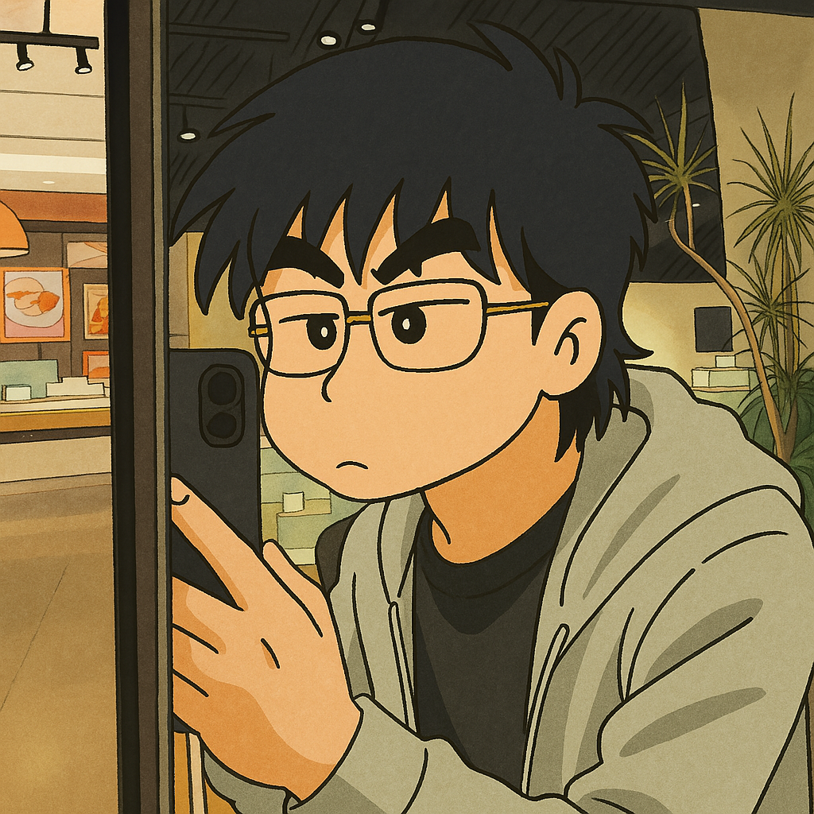

I am a research scientist at NVIDIA, where I work on post-training for large language models. I received my PhD in computer science from Georgia Tech, where I was fortunate to be advised by Alan Ritter and Wei Xu. Previously, I interned at Google DeepMind (formerly Google Brain) and TTIC.
[Google Scholar] [CV] [X]